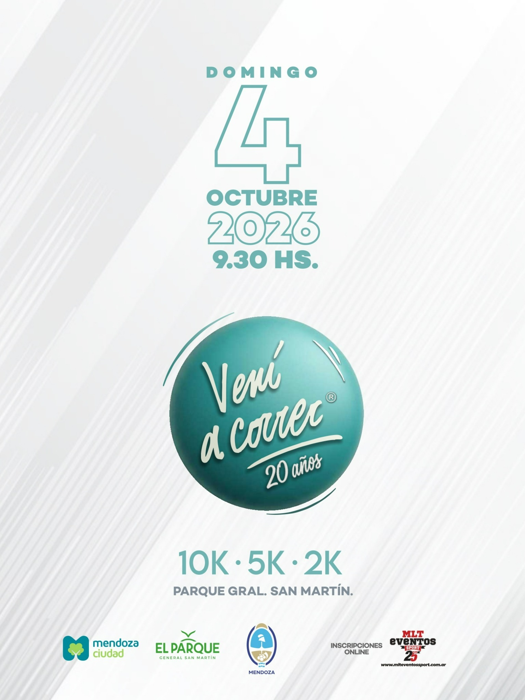
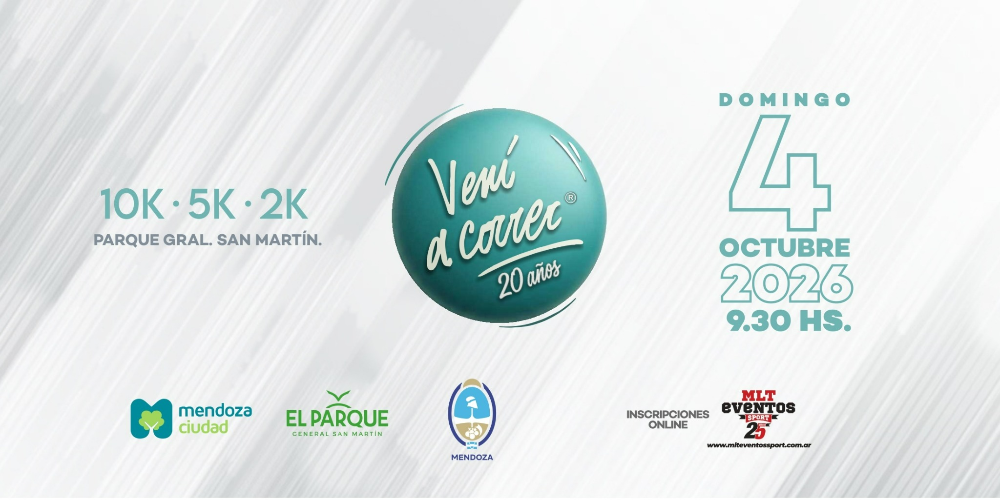

EDICIÓN Nº 20 · MENDOZA, ARGENTINA
Una mañana para movernos, encontrarnos y celebrar.
Domingo 4 de octubre de 2026 · Concentración 9:00 hs · Largada 9:30 hs · Parque General San Martín.
10K5K2K

04 · 10 · 2026EL EVENTOElegí tu distancia.
04 OCTFecha 09:30Largada PARQUEGeneral San Martín 3 DIST.10K · 5K · 2K
Elegí tu distancia.
Viví la edición 20.
Vení a Correr celebra su vigésima edición en uno de los escenarios más emblemáticos de Mendoza. Podés correr, trotar o caminar y compartir una jornada deportiva pensada para toda la comunidad.

DISTANCIAS E INSCRIPCIÓN
Hay una meta para vos
Primera etapa del 20 de julio al 20 de agosto. La inscripción es intransferible, única y no reembolsable.
10K
Competitiva
Categorías por edades, clasificación con chip descartable y premiación general y por categoría.
$60.000 Incluye remera oficial
5K
General recreativa
Una distancia dinámica para disfrutar corriendo o trotando, con premiación general femenina y masculina.
$55.000 Incluye remera oficial
2K
Caminata familiar
Una propuesta participativa para caminar, iniciarse y compartir el evento en familia.
$50.000 Incluye remera oficial
Inscripciones online: habilitadas desde el 20/07/2026. Cierre el 01/10/2026 a las 23:59 hs o al completar cupos.
LA INSCRIPCIÓN INCLUYE
Todo lo necesario para vivir la carrera
REMERA
OFICIALUso obligatorio durante el evento
OFICIALUso obligatorio durante el evento
Derecho a participación
Acceso a la distancia seleccionada y servicios oficiales del evento.
Remera oficial
Uso obligatorio para todas las distancias.
Número y chip
10K: número + chip descartable. 5K y 2K: número de participante. Uso obligatorio.
Medalla finisher
Para quienes crucen la línea de llegada.
Servicios integrales
Hidratación, seguridad, seguro del corredor, sorteos, cronometraje, controles y servicio médico.
CATEGORÍAS
Clasificación por distancia
La edad de referencia para las categorías se calcula al 31 de diciembre de 2026.
Femenino y masculino
16/1920/2425/2930/3435/3940/4445/4950/5455/5960/6465/6970+
Participantes de 16 y 17 años: autorización escrita del padre, madre, tutor/a o encargado.
General recreativa
Clasificación general femenina y masculina.
1º · 2º · 3º puesto
Caminata familiar
Modalidad participativa femenina y masculina.
Para disfrutar en comunidad
PREMIACIÓN
Reconocemos cada logro
General femenino y masculino
Primer, segundo y tercer puesto.
Medallones + obsequios de sponsorsCategorías por edades
Primer, segundo y tercer puesto femenino y masculino.
Medallones + obsequios de sponsorsGeneral femenino y masculino
Primer, segundo y tercer puesto.
Medallones + obsequios de sponsorsCIRCUITOS
El Parque será nuestro escenario
Largada y llegada en el Parque General San Martín. Los recorridos oficiales se publicarán cuando sean confirmados.
CIRCUITO 10K
Próximamente
Acá se mostrará el mapa oficial, puestos de control, hidratación y puntos de referencia.
CRONOGRAMA
Fechas y horarios importantes
Apertura de inscripciones
Inicio de la venta online.
Cierre de inscripciones
O antes, si se completan los cupos.
Acreditación y kit
Nave Cultural, Mendoza Ciudad. Horario a confirmar.
Concentración
Parque General San Martín.
Largada
Inicio oficial de las tres distancias.
INFORMACIÓN DE CARRERA
Servicios, controles y requisitos
Cronometraje
Cinco minutos antes de la largada se pondrá en funcionamiento el sistema con cuenta regresiva visible hasta la partida.
Control e hidratación
Habrá puestos de control y orientación durante el recorrido, además de hidratación en la llegada.
Servicio médico
Un servicio de ambulancias acompañará el desarrollo de la competencia.
Seguro
Todos los participantes contarán con cobertura durante el desarrollo del evento.
Identificación
El número debe colocarse en el pecho, permanecer visible y no puede ser alterado ni ocultado.
Sanitarios
La ubicación de cada servicio estará señalizada en la zona de largada.
ACREDITACIÓN Y ENTREGA DE KIT
Sábado 3 de octubre
Lugar: Nave Cultural, Mendoza Ciudad.
Horario: a confirmar.
El kit solo podrá retirarlo el titular o una persona autorizada con la documentación correspondiente.
Presentar en la acreditación
- DNI.
- Deslinde de responsabilidad impreso y firmado.
- Certificado médico impreso.
- Comprobante del pedido de inscripción recibido por correo, digital o impreso.
- Comprobante de pago de Mercado Pago, digital o impreso.
DOCUMENTACIÓN
Reglamento y deslinde
Descargá, revisá e imprimí la documentación requerida para participar.
Resultados oficiales
Ediciones anteriores
Consultá las clasificaciones completas de Vení a Correr en el sistema oficial de MLT Eventos Sport.
INSCRIPCIONES ONLINE
Reservá tu lugar
Habilitadas desde el 20 de julio. Cierre el 1 de octubre a las 23:59 hs o al completar cupos.
- 10K + remera: $60.000
- 5K + remera: $55.000
- 2K + remera: $50.000
La inscripción es intransferible, única y no reembolsable.
PREGUNTAS FRECUENTES
Todo lo que necesitás saber
¿Puedo correr, trotar o caminar?
Sí. La distancia es elegida por cada participante y puede completarse corriendo, trotando o caminando.
¿Cuándo cierran las inscripciones?
El 1 de octubre de 2026 a las 23:59 hs o antes si se completan los cupos.
¿Dónde y cuándo retiro mi kit?
El sábado 3 de octubre en la Nave Cultural, Mendoza Ciudad. El horario será confirmado por la organización.
¿Puede otra persona retirar mi kit?
Sí, con autorización y toda la documentación correspondiente del titular.
¿Qué documentación debo presentar?
DNI, deslinde firmado, certificado médico, comprobante del pedido de inscripción y comprobante de pago.
¿Qué incluye la inscripción?
Participación, remera oficial, número, chip descartable para 10K, medalla finisher, hidratación, seguridad, seguro, sorteos, cronometraje, controles y servicio médico.
ACOMPAÑAN
Organización e instituciones
MENDOZA
CIUDADEL PARQUE
GENERAL SAN MARTÍNGOBIERNO
DE MENDOZAMLT EVENTOS
SPORT
CIUDADEL PARQUE
GENERAL SAN MARTÍNGOBIERNO
DE MENDOZAMLT EVENTOS
SPORT